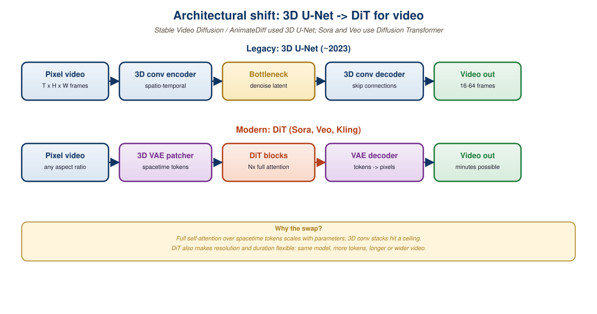

"A video is a sequence of images that promised not to fight each other for continuity. The DiT teaches them to keep that promise."
Author's notebook, after reading the Sora technical report, February 2024
The architecture that drives Sora, Veo, Runway Gen-4, and every serious 2025 video generator is a Diffusion Transformer (DiT) operating on spatiotemporal latent patches. Image DiTs (Peebles & Xie, 2022) showed that the U-Net could be replaced by a plain transformer in image diffusion; video DiTs extend that thesis by patchifying both space and time into a single token sequence. The forward pass is structurally identical to the GPT decoder of Part I: tokenize the input, apply self-attention across the entire sequence, predict the denoising target. What changes is the tokenizer (a 3D causal VAE), the position encoding (spatiotemporal RoPE), and the conditioning (text via T5 plus optional image, depth, or pose). This section walks the lineage, contrasts the 3D U-Net it replaced, lays out the spatial-temporal attention math, and shows a minimal video DiT training loop you can run on a single GPU.
1. From Image DiT to Video DiT
The image DiT (Peebles & Xie, 2022, arXiv:2212.09748) made one architectural argument: the diffusion U-Net's inductive bias toward 2D spatial locality is not necessary; a plain transformer on patches works equally well and scales better. Stable Diffusion 3 (Esser et al., 2024) productionized this thesis with the MM-DiT, an image DiT with multimodal text-and-image attention and rectified flow training. Sora (OpenAI, February 2024) extended the same recipe to video by tokenizing both spatial patches (typically 2x2 in latent space) and temporal patches (typically 1 to 4 latent frames per token group), producing a single 1D token sequence that a DiT processes with full self-attention.
The "from image DiT to video DiT" move can be summarized in three changes. First, the input is a (T, H, W, C) latent volume rather than an (H, W, C) latent grid. Second, patches now have a temporal dimension; a typical patch is shape (2, 2, 2) in (T, H, W), producing T/2 * H/2 * W/2 tokens per video. Third, the position encoding adds a temporal axis (3D RoPE or factorized sinusoidal encodings) so the model can disambiguate same-spatial-location-different-time tokens.
If you can do image generation, you can do video generation: the only difference is the length of the token sequence. A 512x512 image at patch size 2 in a 4x-downsampling VAE has 64x64=4,096 tokens. A 5-second 720p video at 24 fps with the same patch scheme has 120 frames; with temporal patches of size 2, that is 60 token-frames times 5,400 spatial tokens per frame, so 324,000 tokens total. That is 80x the image case, which is exactly why Sora's training compute is reported to be roughly two orders of magnitude larger than Stable Diffusion 3's. The architecture is unchanged; the sequence length scales the work.
2. 3D U-Net vs DiT: Why the DiT Won
The 2022-2023 generation of video models (Stable Video Diffusion, AnimateDiff, ModelScope T2V) used 3D U-Nets: standard image U-Nets extended with temporal-attention layers inserted between the spatial 2D convolutions. The architecture works but has structural disadvantages that the DiT does not share.
First, the 3D U-Net is fundamentally hybrid: 2D spatial convolutions plus 1D temporal attention plus cross-modal text attention plus skip connections. Each component has its own scaling behavior, and the joint scaling laws are messier than for a single architecture. The DiT is uniform: every layer is the same transformer block, just with different position encodings.
Second, the U-Net's spatial-then-temporal factorization underweights long-range temporal interactions. A frame's content depends on frames many steps in the past, but the temporal-attention layers between U-Net stages have limited receptive fields. The DiT applies full self-attention across all spatiotemporal tokens, so any frame can attend to any other frame in a single layer.
Third, scaling. The DiT thesis (and the GPT thesis behind it) is that a uniform transformer scales better than an architecturally diverse network when you add 10x more parameters and 10x more data. The Sora technical report explicitly invokes this: "Sora is a diffusion transformer. Transformers have demonstrated remarkable scaling properties across a variety of domains, including language modeling, computer vision, and image generation. In this work, we find that diffusion transformers scale effectively as video models as well." The empirical evidence (Sora vs. Stable Video Diffusion at comparable parameter count) bears this out.

3. Spatial-Temporal Attention and 3D RoPE
In a video DiT, each token represents a small spatiotemporal patch of the input latent volume. If the VAE downsamples by 8x in space and 4x in time, and the patchifier takes 2x2x2 patches in the latent, the resulting token spacing is 16x16 pixels per spatial step and 4 frames per temporal step in pixel space. Each token has a (t, y, x) coordinate; position encodings must respect all three.
The standard choice in 2024-2025 is 3D Rotary Position Embedding (3D RoPE), a factorized extension of the 2D RoPE used in image DiTs. The query and key vectors are split into three groups, and each group gets rotated by the angle corresponding to its respective axis:
$$ q' = R_t(\theta_t) \oplus R_y(\theta_y) \oplus R_x(\theta_x) \cdot q $$
where $R_t, R_y, R_x$ are 2D rotation matrices acting on the corresponding feature subspaces, and $\theta_t, \theta_y, \theta_x$ are sinusoidal frequencies computed from the (t, y, x) coordinate. The factorization means each axis contributes a separate inductive bias for relative position. CogVideoX (Yang et al., 2024) and Open-Sora (Lab, 2024) both use 3D RoPE in production.
The attention itself is dense, full self-attention across all tokens. For a 5-second 720p video this is hundreds of thousands of tokens, and the O(N^2) cost is the dominant compute term. Frontier systems (Sora, Veo) use a combination of FlashAttention-3, sparse attention masking (window plus global), and sequence parallelism across many GPUs to make this tractable. For training a small video DiT on a single GPU, you typically reduce resolution to 256x256, frames to 16, and patch size to 4x4x4, which brings the sequence length down to a manageable 1,024 tokens.
4. The 3D Causal VAE: Tokenizer
Video DiTs do not operate on raw pixels; they operate on the latents of a 3D causal VAE that compresses (T, H, W, 3) pixel video into (T', H', W', C) latent tensors with C around 16 and (T', H', W') roughly (T/4, H/8, W/8). The "3D" part is that the VAE uses 3D convolutions across both space and time; the "causal" part is that the temporal kernels are causal (each output frame depends only on past frames), which lets the VAE encode arbitrary-length video without needing to know the full length up front.
The causal property matters for two reasons. It enables streaming encoding (you can encode a video frame-by-frame as it arrives), and it enables variable-length outputs (the model can decode any prefix of its predicted latent sequence). CogVideoX, Wan 2.1, and HunyuanVideo all ship causal 3D VAEs at compression ratios around 4x temporal and 8x spatial. The reconstruction quality at these compression ratios is the ceiling for how good the DiT outputs can ever look: a poor VAE caps the entire system.
5. Training and Inference: Rectified Flow and Classifier-Free Guidance
The 2024 standard for video DiT training is rectified flow matching (Liu et al., 2022; Esser et al., 2024). Rather than predicting noise as in original DDPMs, the model predicts a velocity field: given a noisy sample $x_t$ at time $t$, the model predicts the velocity $v_\theta(x_t, t)$ that points from $x_t$ along the trajectory toward the clean sample. The training loss is
$$ \mathcal{L} = \mathbb{E}_{t, x_0, \epsilon} \left[ \| v_\theta(x_t, t) - (x_1 - x_0) \|^2 \right] $$
where $x_0$ is a clean sample (the video), $x_1$ is pure noise, and $x_t = (1-t) x_0 + t x_1$ is the linear interpolation. Inference is an ODE solver (Euler or Heun) integrating from $x_1$ to $x_0$ using the learned velocity. Typical step counts are 20-50, an order of magnitude lower than the 1,000 steps of original DDPMs.
Conditioning is handled with classifier-free guidance (CFG). At training, the text condition is dropped with probability 10-15%, so the model learns both conditional and unconditional velocities. At inference, the guided velocity is $v_{guided} = v_{uncond} + w (v_{cond} - v_{uncond})$ with $w$ between 3 and 9 typically; higher $w$ produces stronger adherence to the prompt at the cost of sample diversity. CFG is applied per ODE step and is the same trick that drives every modern image diffusion model.
# Minimal video DiT training loop on a synthetic dataset.
# Goal: illustrate the architecture, not produce competitive samples.
import torch
import torch.nn as nn
from einops import rearrange
class VideoDiT(nn.Module):
"""Simple video DiT with spatiotemporal patches and 3D RoPE."""
def __init__(self, in_ch=4, patch=(2, 4, 4),
dim=384, depth=8, heads=6, text_dim=512):
super().__init__()
self.patch = patch
self.patchify = nn.Conv3d(in_ch, dim,
kernel_size=patch, stride=patch)
self.blocks = nn.ModuleList([
nn.TransformerEncoderLayer(
d_model=dim, nhead=heads, dim_feedforward=4*dim,
activation="gelu", batch_first=True, norm_first=True)
for _ in range(depth)
])
self.time_mlp = nn.Linear(1, dim)
self.text_mlp = nn.Linear(text_dim, dim)
self.unpatchify = nn.ConvTranspose3d(dim, in_ch,
kernel_size=patch, stride=patch)
def forward(self, x, t, text_emb):
# x: (B, C, T, H, W) latent video; t: (B,) scalar timestep in [0, 1]
B = x.shape[0]
tok = self.patchify(x) # (B, dim, t', h', w')
t_p, h_p, w_p = tok.shape[-3:]
tok = rearrange(tok, "b c t h w -> b (t h w) c")
# Inject timestep and text as adaLN-style additive conditioning.
cond = self.time_mlp(t.unsqueeze(-1)) + self.text_mlp(text_emb)
tok = tok + cond.unsqueeze(1)
# Transformer with shared 3D RoPE applied inside attention.
# (RoPE implementation omitted for brevity; see torchtune.modules.RotaryPositionalEmbeddings.)
for block in self.blocks:
tok = block(tok)
tok = rearrange(tok, "b (t h w) c -> b c t h w",
t=t_p, h=h_p, w=w_p)
return self.unpatchify(tok)
# Rectified-flow training step
model = VideoDiT().cuda()
opt = torch.optim.AdamW(model.parameters(), lr=1e-4)
for step in range(100):
# Clean latent video x0 from a 3D VAE; placeholder synthetic data here.
x0 = torch.randn(2, 4, 8, 16, 16, device="cuda")
x1 = torch.randn_like(x0) # Gaussian noise endpoint
text = torch.randn(2, 512, device="cuda") # T5-style text embed
t = torch.rand(2, device="cuda") # uniform in [0, 1]
xt = (1 - t.view(-1, 1, 1, 1, 1)) * x0 + t.view(-1, 1, 1, 1, 1) * x1
v_target = x1 - x0
v_pred = model(xt, t, text)
loss = ((v_pred - v_target) ** 2).mean()
opt.zero_grad(); loss.backward(); opt.step()
if step % 20 == 0:
print(f"step {step:3d} loss={loss.item():.4f}")6. CogVideoX, Open-Sora, and the Open Recipe
The open-source video DiT ecosystem matured rapidly in 2024-2025. CogVideoX (THUDM, 2024, arXiv:2408.06072) is a 5B parameter video DiT trained on around 50k hours of video; it supports 6-second 720p generations at 8 fps and ships permissively licensed weights. Open-Sora (PKU-YuanGroup, 2024-2025) is a community reimplementation of the Sora recipe with open weights at 1.1B and 8B sizes; it explicitly documents the training recipe (3D causal VAE, 3D RoPE DiT, rectified flow) for reproducibility. HunyuanVideo (Tencent, December 2024) is a 13B DiT with open weights, the largest open-weight video model at the time of writing, with competitive quality against Veo 2 on internal benchmarks.
These three serve different community roles. CogVideoX is the easiest to fine-tune on a single A100. Open-Sora is the cleanest reference for understanding the recipe. HunyuanVideo is the highest-quality open weight you can run if you have a multi-GPU box. None of them match Sora 2 or Veo 3 on the consumer-grade frontier (see Section 33.2), but all three are usable in production for use cases where open weights and self-hosting matter more than absolute quality.
A mid-sized game studio shipping a fantasy RPG uses Sora 2 for storyboarding (text-to-rough-video for pitching shots), Veo 3 for in-game cinematics (high quality, character consistency across multi-shot sequences), and CogVideoX fine-tuned on its own concept art for stylized intermediate concepts. The fine-tune cost was about \$30k of A100 hours and a week of engineer time; the resulting model produces shots matching the studio's art direction that the closed-weight frontier models cannot match without expensive prompt engineering. The studio keeps the fine-tune in-house and uses the commercial APIs only for the polish layer.
7. Where the Architecture Is Going
The 2026 trajectory of the video DiT architecture has three visible directions. First, longer context: minute-plus generations (currently a 2-minute limit on Sora 2, 3 minutes on Veo 3 for paying users) require attention efficient enough for sequences in the millions of tokens. Sparse attention (window plus global), state-space hybrids (Mamba-2 layers in place of some transformer blocks), and hierarchical tokenization are all being explored. Second, native multimodal: instead of separate text-encoders feeding cross-attention, the trend is to interleave video tokens, text tokens, and audio tokens in the same sequence and use a single self-attention pass (Section 37 covers this; Llama 4 and Gemini 2 Pro show the direction). Third, world-model-style next-frame prediction: instead of denoising a full video at once, predict the next short clip conditioned on the previous clips, which enables interactive generation (Section 41.4 covers world models in depth).
Image DiT, video DiT, audio DiT (Stable Audio), 3D DiT (Genie 2, Shap-E), and even point-cloud DiT (Point-E) all use the same basic recipe: take a data tensor, slice it into patches, treat patches as tokens, run a transformer, unpatchify back to the data tensor. The patches are 2D for images, 3D for video and 3D scenes, 1D for audio, and unstructured for point clouds. The transformer does not care. Once you internalize that patchify-then-transformer is the universal recipe, the entire 2024-2026 generation of generative models collapses into one architecture with different tokenizers.
Video diffusion in 2026 is patchify-then-DiT: a 3D causal VAE compresses the video into latents, a transformer denoises spatiotemporal patches with 3D RoPE, and rectified flow with classifier-free guidance handles training and sampling. The architecture is uniform across image, video, audio, and 3D generation; only the tokenizer differs. The 3D U-Net lineage is fading; the open recipe (CogVideoX, Open-Sora, HunyuanVideo) is reproducible; the closed frontier (Sora 2, Veo 3) extends the same recipe at 100x the compute.
- A 5-second 1024x576 video at 24 fps, with an 8x spatial / 4x temporal VAE and 2x2x2 patches, produces how many DiT tokens per video? Connect this to the O(N^2) self-attention cost and explain why frontier video DiTs need sequence-parallel training even at a few-billion-parameter scale.
- The 3D U-Net's spatial-then-temporal factorization underweights long-range temporal interactions. Construct a video prompt where this matters (i.e., where Sora 2 succeeds and Stable Video Diffusion fails) and explain the architectural reason.
- Rectified flow matching trains the model to predict a velocity rather than the noise. Show that on the linear interpolation $x_t = (1-t) x_0 + t x_1$, the velocity target $x_1 - x_0$ is mathematically equivalent to the score-matching target up to a constant factor. Why do practitioners prefer the velocity formulation in production?
What Comes Next
Section 33.2 walks the 2026 commercial video-generation frontier (Sora 2, Veo 3, Runway Gen-4, Kling, Pika) and the capability matrix that distinguishes them.
Further Reading
- Peebles, W. & Xie, S. (2022). Scalable Diffusion Models with Transformers (DiT). ICCV 2023. arXiv:2212.09748. The original DiT paper; the architectural starting point for every video DiT.
- OpenAI (2024). Video Generation Models as World Simulators (Sora Technical Report). openai.com/research/video-generation-models-as-world-simulators. The first commercial-grade spatiotemporal DiT and the report that made the recipe public.
- Yang, Z. et al. (2024). CogVideoX: Text-to-Video Diffusion Models with An Expert Transformer. arXiv:2408.06072. The largest permissively-licensed open video DiT in 2024 and the cleanest open recipe.
- PKU-YuanGroup (2024). Open-Sora 1.2: Open Recipe for Sora-Style Video Generation. github.com/PKU-YuanGroup/Open-Sora-Plan. Community implementation with documented training recipe; useful as the reference for reproducibility.
- Esser, P. et al. (2024). Scaling Rectified Flow Transformers for High-Resolution Image Synthesis (Stable Diffusion 3). arXiv:2403.03206. The MM-DiT paper that established rectified flow plus DiT as the standard image-generation recipe; video DiTs inherit the training loss.
- Kong, W. et al. (2024). HunyuanVideo: A Systematic Framework for Large Video Generative Models. arXiv:2412.03603. Tencent's 13B open-weight video DiT; the largest open weight at the time of writing.
- Liu, X. et al. (2022). Flow Straight and Fast: Learning to Generate and Transfer Data with Rectified Flow. ICLR 2023. arXiv:2209.03003. The original rectified-flow paper underlying the training loss used in CogVideoX, SD3, and most 2024 video DiTs.
- Dao, T. et al. (2024). FlashAttention-3: Fast and Accurate Attention with Asynchrony and Low-precision. arXiv:2407.08608. The attention kernel that makes million-token video DiT training tractable on H100.